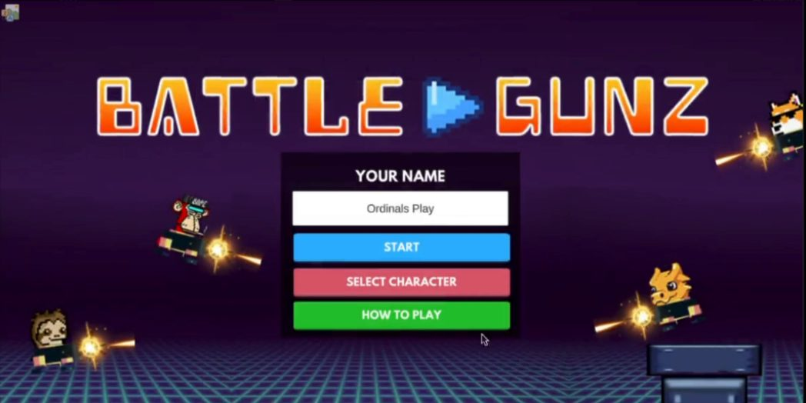
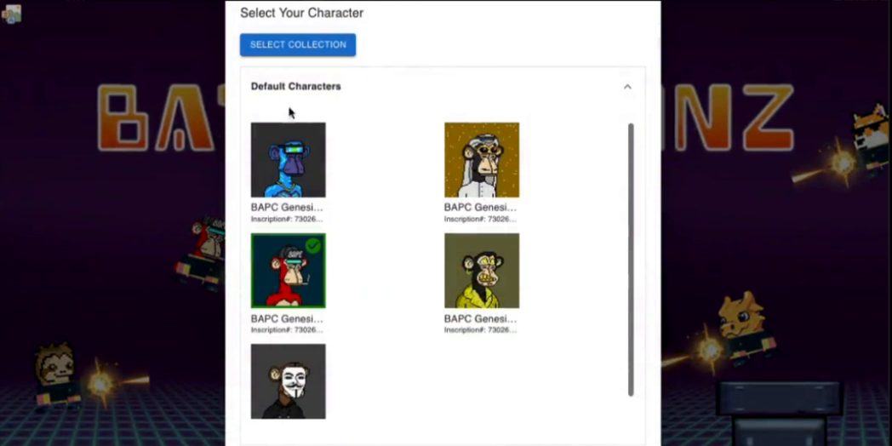
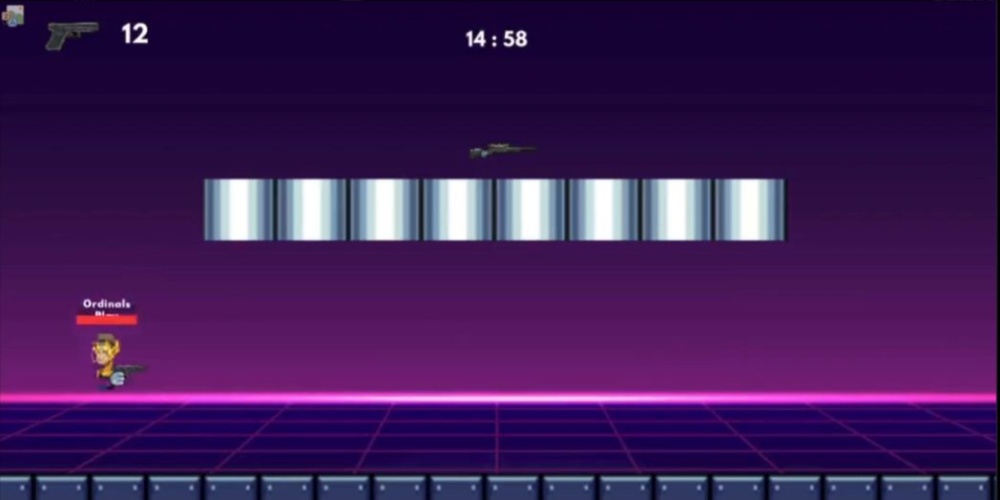
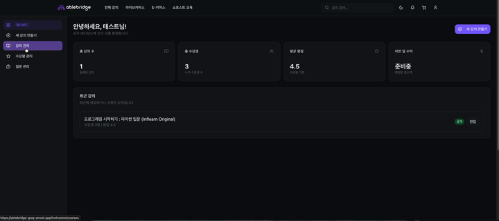
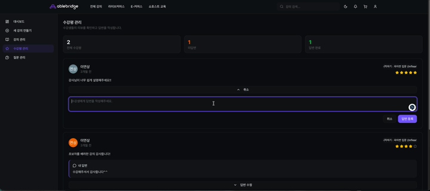

Projects
A selection of products I have built or co-founded. Each one taught me something different about shipping software that real users depend on.
Grapoll – AI Research Platform
Grapoll is a polling platform paired with an AI research workflow that generates and reviews research reports. I co-founded the project and built the backend.
What I Built
- A multi-agent AI research workflow using LangGraph, GPT-4o, Stanford STORM, and CRAG methodologies
- Over 40 REST APIs, stateless JWT authentication, and six interactive voting systems
- An automated AI quality review pipeline that combines rule-based validation with LLM scoring
- OpenAPI code generation that keeps the TypeScript frontend in sync with backend schemas
- Anti-fraud systems: VPN detection, device fingerprinting, rate limiting, and identity verification
- XSS protection through DOMPurify sanitization and secure markdown rendering
Technologies
- LangGraph, GPT-4o, Stanford STORM, CRAG
- REST APIs, JWT authentication, OpenAPI
- TypeScript, DOMPurify
Ordinals Play
Ordinals Play is a real-time multiplayer game built in Unity where owning a Bitcoin Ordinals NFT unlocks in-game assets. As co-founder and software developer, I built the networking layer, the ownership verification API, and the official website.
What I Built
- A real-time multiplayer networking system in Unity using Photon, supporting over 6,300 registered players
- A Node.js REST API that verifies Bitcoin Ordinals NFT ownership through JSON-RPC
- The official React website with wallet integration, NFT galleries, and partnership management
- Multiplayer synchronization, matchmaking, and room management that eliminated reported desynchronization
Results
- Grew organically to more than 6,300 users without paid advertising
- Secured partnerships with more than 50 NFT communities
Screenshots




AbleBridge Platform


As a software developer at AbleBridge (Sep 2025 – Mar 2026), I worked across the stack on a production web application, from the database and API layer to authentication and cloud delivery.
What I Built
- Scalable REST APIs with NestJS, Prisma, and PostgreSQL: over 20 production-ready endpoints with DTO validation and Swagger documentation
- A full-stack application on Next.js 16 and React 19 with reusable authentication architecture, Server Actions, and role-based access control
- A stateless JWT authentication system using NextAuth v5 and Passport.js that removed database lookups while securing OAuth workflows
- An AWS S3 media upload pipeline for files up to 5GB, delivered through CloudFront with JWT-protected endpoints
- Dockerized backend services with multi-stage builds and automated Prisma client generation
Technologies
- NestJS, Prisma, PostgreSQL, Swagger
- Next.js 16, React 19, NextAuth v5, Passport.js
- AWS S3, CloudFront, Docker
This Website
I built this site from scratch for my Fundamentals of Web Development course, with no frameworks and no pre-built code. It started as raw, semantic HTML in Project 1, gained a hand-written CSS design in Project 2, and in Project 3 adds JavaScript: an interactive Google Map and a mobile-first home page. Every page passes the W3C HTML and CSS validators.